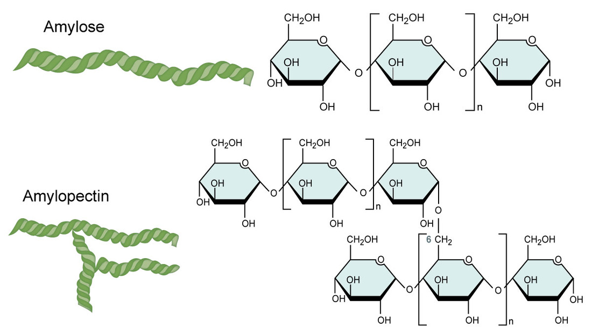
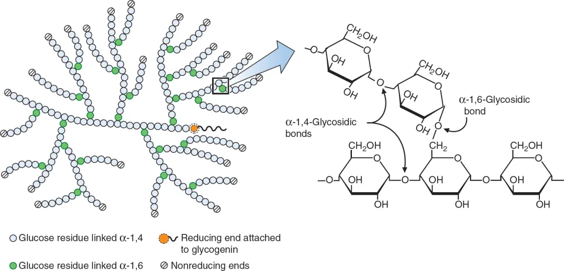
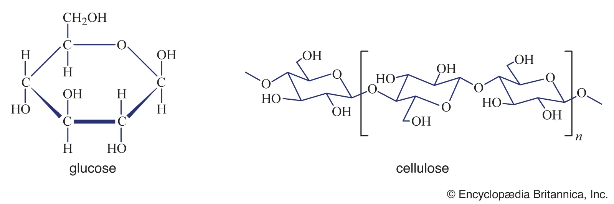
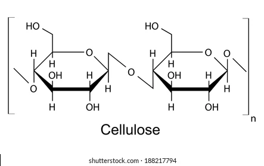

Polysaccharides
Hundreds to Thousands of monosaccharides bond together
Polysaccharide --- many saccharides
Monosaccharides are bonded by Glycosidic linkages
built by condensation, break by hydrolysis
Polyaccharides:
For Energy
Starch
Amylose
Amylopectin
Glycogen
For Structure
Cellulose
Chitin
Starch
In plants
Amylose
1,4 glycosidic linkage
unbranched, insoluble, hard to digest
Amylopectin
1,4 & some 1,6 glycosidic linkage
branched, soluble, easy to digest --- because many enzyme attachment points are there

Amylose and Amylopectin
Glycogen
In animals' liver
1-4 & many 1-6 glycosidic linkages, highly branched
Complexer than Amylopectin, because animals doesn't have roots
When blood sugar is too high, it's hydrolyzed (directed by blood control hormones) to supply blood sugar
When blood sugar is too high, the liver converts glucose to glycogen under Insulin's instruction
Could be depleted in one day unless replenished by consumption of food

Glycogen
Cellulose
Plant cell wall structure
b1-4 bond
undigestable for animal because we are lack of enzymes to digest it.
used in paper manufacture, lumber product and cotton
 
Cellulase
Chitin
Exoskeleton of Crustaceans
Fungi's cell wall
b1-4 bond with amino functional group
Contains nitrogen and glucose
Chitin
Back